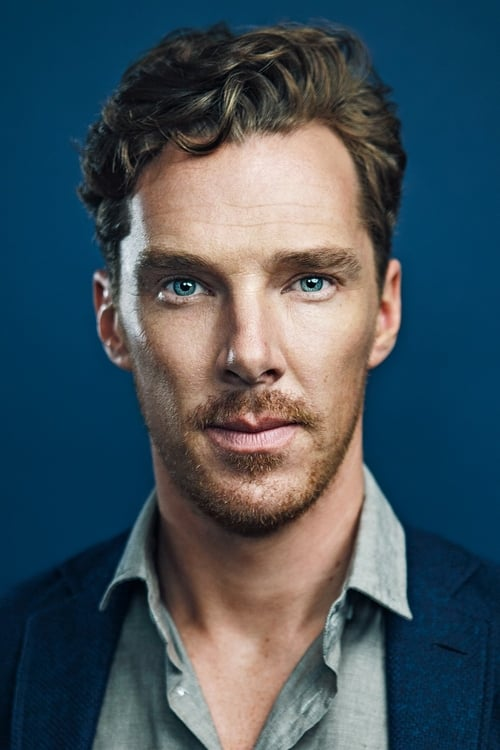
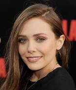
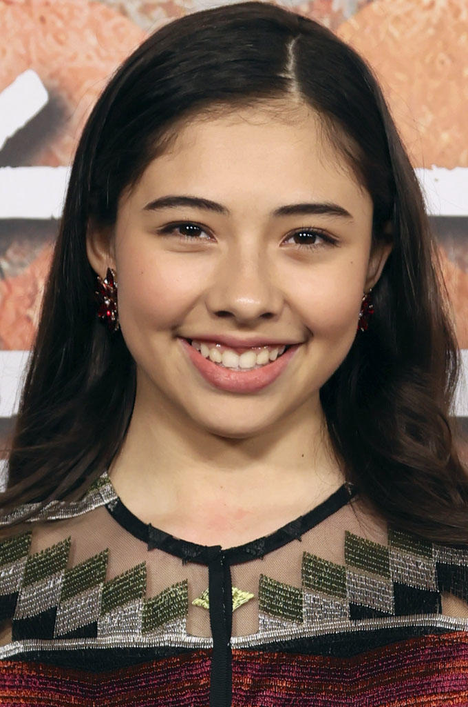
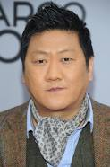
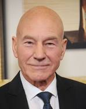

Elenco do Filme Doutor Estranho
Elenco:

Ator do Doutor Estranho
Benedict Cumberbatch
Nascimento: 19 de julho de 1976
Idade: 45 anos
Nacionalidade: Britânica

Atriz da Feiticeira Escarlate
Elizabeth Olsen
Nascimento: 16 de fevereiro de 1989
Idade: 33 anos
Nacionalidade: Americana

Atriz da America Chavez
Xochitl Gomez
Nascimento: 29 de abril de 2006
Idade: 16 anos
Nacionalidade: Canadense

Ator de wong
Benedict Wong
Nascimento: 3 de julho de 1971
Idade: 50 anos
Nacionalidade: Britânica
 Ator do Senhor Fantástico
Ator do Senhor Fantástico
John Krasinski
Nascimento: 20 de outubro de 1979
Idade: 42 anos
Nacionalidade: Americana

Ator do professor Xavier
Patrick Stewart
Nascimento: 13 de julho de 1940
Idade: 81 anos
Nacionalidade: Britânica